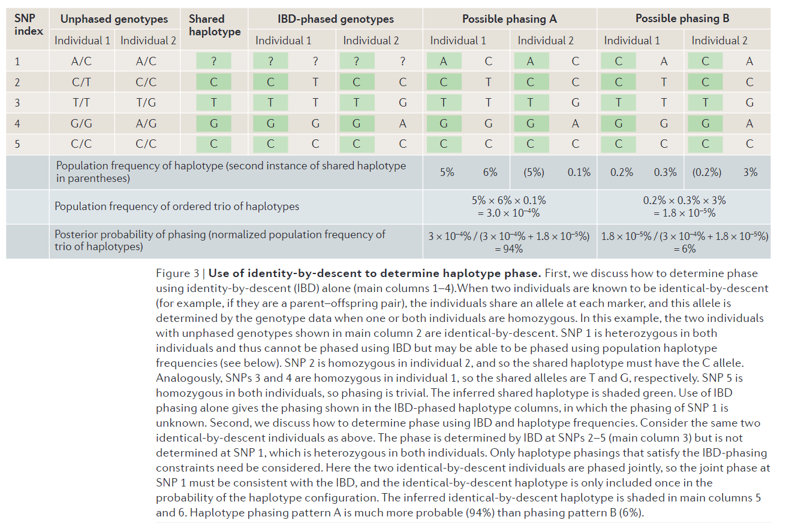

<!DOCTYPE html>


<html lang="zh-CN">


<head>
  <meta name="baidu-site-verification" content="codeva-NSg7ynviLa" />
  <meta charset="utf-8" />
    
  <meta name="viewport" content="width=device-width, initial-scale=1, maximum-scale=1" />
  <title>
    文献阅读-基因型填充 |  
  </title>
  <meta name="generator" content="hexo-theme-ayer">
  
  <link rel="shortcut icon" href="/images/mojie.jpg" />
  
  
<link rel="stylesheet" href="/dist/main.css">

  <link rel="stylesheet" href="https://cdn.jsdelivr.net/gh/Shen-Yu/cdn/css/remixicon.min.css">
  
<link rel="stylesheet" href="/css/custom.css">

  
  <script src="https://cdn.jsdelivr.net/npm/pace-js@1.0.2/pace.min.js"></script>
  
  

  

<link rel="alternate" href="/atom.xml" title="null" type="application/atom+xml">
</head>

</html>

<body>
  <div id="app">
    
      
    <main class="content on">
      <section class="outer">
  <article
  id="post-文献阅读-基因型填充"
  class="article article-type-post"
  itemscope
  itemprop="blogPost"
  data-scroll-reveal
>
  <div class="article-inner">
    
    <header class="article-header">
       
<h1 class="article-title sea-center" style="border-left:0" itemprop="name">
  文献阅读-基因型填充
</h1>
 

    </header>
     
    <div class="article-meta">
      <a href="/posts/2ca177e4/" class="article-date">
  <time datetime="2023-04-14T01:33:26.000Z" itemprop="datePublished">2023-04-14</time>
</a> 
  <div class="article-category">
    <a class="article-category-link" href="/categories/%E7%90%86%E8%AE%BA%E5%AD%A6%E4%B9%A0/">理论学习</a> / <a class="article-category-link" href="/categories/%E7%90%86%E8%AE%BA%E5%AD%A6%E4%B9%A0/%E5%9F%BA%E5%9B%A0%E5%9E%8B%E5%A1%AB%E5%85%85/">基因型填充</a>
  </div>
  
<div class="word_count">
    <span class="post-time">
        <span class="post-meta-item-icon">
            <i class="ri-quill-pen-line"></i>
            <span class="post-meta-item-text"> 字数统计:</span>
            <span class="post-count">2.6k</span>
        </span>
    </span>

    <span class="post-time">
        &nbsp; | &nbsp;
        <span class="post-meta-item-icon">
            <i class="ri-book-open-line"></i>
            <span class="post-meta-item-text"> 阅读时长≈</span>
            <span class="post-count">9 分钟</span>
        </span>
    </span>
</div>
 
    </div>
      
    <div class="tocbot"></div>


  
    <div class="article-entry" itemprop="articleBody">
       
  <link rel="stylesheet" type="text/css" href="https://cdn.jsdelivr.net/hint.css/2.4.1/hint.min.css"><p>关于基因型填充的文献总结。</p>
<span id="more"></span>
<h1>亲属个体间的基因型填充</h1>
<p>在下图中，所有个体均存在分型的位点标为红色，前两个世代的个体存在分型的位点标为黑色 (见图 A)。根据前两个世代的基因型数据，可以对前两个世代的基因型进行定相，然后再第三世代的个体基因型进行定相（见图 B）。最后，第三世代所有个体缺失的基因型可以通过比对它们自身的单倍型与家系中其它个体的单倍型 （二者同源相同，IBD）来推断缺失位点的基因型（见图 C）。</p>
<p></p>
<p>从 图A 到图B根据系谱信息定向的原理解释如下，亲子对在每个位点都共享一个碱基，并且共享的碱基是 IBD 的，因此亲本和子代在一条染色体上共享一个相同的单倍型（假设没有重组事件）。</p>
<p>下图就是根据 IBD 来定相的一个例子，这两个个体在这 4 个位点共享一个 IBD 的单倍型块（比如亲子对）。对于某个位点，只要其中一个个体的基因型为纯合子，那么 IBD 的单倍型在这个位点的分型就是这个纯合子的碱基。因此，只有当两个个体在某个位点均为杂合子时（或者存在缺失），这个位点的定相才是未知的。</p>
<p>如果同时处理超过 2 个亲属个体，例如<strong>对于 trios 只有当三者均为杂合子（或者存在缺失）时才无法定相</strong>。采用更大的家系会包含更多的信息。</p>
<p></p>
<p>因此只根据系谱信息无法实现所有个体全部位点的定相，之后还需要使用群体信息定相。并且而且如果存在<strong>分型错误</strong>，那么根据系谱信息定相的比例和准确率都会下降。</p>
<h1>群体信息的基因型填充</h1>
<p>无关个体之间仍存在类似于亲属个体 IBD 片段的共同单倍型片段，只不过它们共享的单倍型片段长度要短得多（因为它们得共同祖先更远），因此也很难完全确定它们之间共享的单倍型片段。</p>
<p>无关个体的基因型填充原理见下图，这里目标样本 (study samples) 具有相对较多的位点（可能是100k 到 1000 k），我们将目标样本与参考单倍型库（比目标样本具有更多的位点）进行比对（下图 A），二者共同的单倍型见图 B ，然后目标样本中的缺失位点可以通过复制匹配上的参考单倍型的基因型来进行填充（下图C）。</p>
<p>当将目标样本的单倍型与参考单倍型库进行比对存在<strong>歧义</strong>，即不知道复制哪一个参考单倍型时，填充脚本一般会提供这个缺失位点的基因型概率（比如单倍型库中观测到的 A/A 比例为 60%，A/C 比例为 40%）。</p>
<p>大部分的单倍型构建软件均会在估计单倍型过程中自动”填充“缺失的基因型。基因型填充软件可以分为两列：一是计算密集型工具，例如 IMPUTE, MACH, fastPHASE/BIMBAM，这些软件在填充缺失位点时会考虑全部观测到的位点；二是计算更加高效的工具，例如 PLINK，TUNA, WHAP, BEAGLE ，这些软件填充缺失位点时只会考虑少量的相邻位点的基因型。</p>
<p></p>
<h2 id="群体信息定相算法">群体信息定相算法</h2>
<p>总共有三种算法：<code>Clark's algorithm</code> ，<code>EM algorithm</code> 和 <code>Coalescent-based methods and hidden Markov models</code>，目前用的最多是最后一种。</p>
<p>运用 HMM 算法的软件包括，PHASE, fastPHASE, MACH, IMPUTE2 。其中，PHASE 古老，计算慢，但是在所有有的群体信息定相软件中最准确，有时视为金标准 (<strong>SHAPE-IT是其更快的版本</strong>)。fastPHASE 相比于 PHASE  提升了速度，准确性略有下降。</p>
<p>相比于 fastPHASE ， <strong>BEAGLE 速度上快了一个数量级</strong>，但是 BEAGLE  对于<strong>中大型样本（大于 1000</strong>）群体更加准确，不适合小样本（100）。当某个染色体区域的位点数目小于 100 时，BEAGLE 同时不适合。</p>
<p>MACH 和 IMPUTE2 使用了新的统计方法，其可以计算更大的群体，而且准确性比 fastPHASE 更高。</p>
<p>Browning (2011) 比较了 BEAGLE  和 MACH, IMPUTE2 的定相表型，其中<strong>MACH在小样本中准确性最高</strong>，<strong>BEAGLE在大样本中准确性最高</strong>，并且 <strong>BEAGLE计算时间最短</strong>。<strong>三种软件均可以通过提高计算时间来增加填充准确性</strong>。在 MACH 和 IMPUTE2 中，可以通过增加 HMM states 的数目来增加模型复杂度，从而更好地利用数据中的信息，得到更准确的结果。在 BEAGLE 中，可以通过合并多次运行结果来提高准确性（这里使用 beagle 3.3.1 版本，跑 15 次，然后每一个杂合子的定向使用 15次结果中的最多的那个，也就是说之前的 beagle 版本都是每次运行结果不一样的）。</p>
<p></p>
<h1>基因型填充的准确性</h1>
<p>Scott et al. (93) 填充了超过 2百万的位点，提取超过 500 个位点与实验室的实际分型进行比较，总的不一致率只有 1.5%。</p>
<p>第二，通过对 90个样本的超过 660k 的位点的填充基因型和实际分型基因型进行比对，总的不一致率小于 0.9% ，<strong>所有位点的平均  达到了 0.93</strong> 。</p>
<h1>基因型填充的作用</h1>
<p>基因型填充的一个作用就是更好地挖掘与性状相关的位点和基因，通过基因型填充，我们可以查看一个关联位点其临近的位点是否也与性状关联，甚至我们可以找到<strong>潜在的因果位点</strong>。</p>
<p>除此之外，基因型填充还可以提高 GWAS 分析的 POWER 。举个例子，Willer et al.  和 Kathiresan et al 发现 rs6511720 这个位点 (在 LDLR 基因中) 与 LDL cholesterol levels 这个性状显著关联，但是由于这个位点不在芯片中，而初始分析只使用了芯片位点，因此初始分析中遗漏了这个选择信号（芯片中的位点与 rs6511720 不存在紧密连锁，最大的配对 r2 只有 0.21）。</p>
<p></p>
<p>另外一个例子如下</p>
<p></p>
<p>但是，准确估计填充对于提高关联分析 POWER 的作用非常困难，这里有两种思路，第一种是使用模拟数据，第二种是合并使用基因组数据和基因表达数据。这里第二种方式更加吸引仍，因为我们比较容易确定位点和转录水平的正向关联。这两种思路均建议基因型填充可以提到挖掘基因研究的 power ，特别是对于等位基因频率小于 10% -20% 的位点。</p>
<h1>基因组关联分析的元分析</h1>
<p>基因型填充作用最好的说明可能就是其可以用于对不同检测平台产生的数据的 GWAS 分析结果的元分析（具体怎么做我不清楚）。</p>
<h1>填充的注意事项</h1>
<ol>
<li>
<p>自填充严格质控</p>
</li>
<li>
<p>有参填充需要确保参考群体和填充群体相同位点的两个碱基的标签相同（应该说的是 vcf 文件中的 ref 和 alt）。</p>
</li>
<li>
<p>有参填充需要严格挑选参考群体。比较不同参考群时，可以在填充群中的基因型随机缺失部分位点，然后查看使用不同参考群的填充准确性。</p>
</li>
<li>
<p>填充完成后，不是所有标记都能准确填充，我们需要确定挑选哪些位点用于下一步的分析。</p>
<p>最简单的方法就是看填充位点的一致率（比如挑选大于 90%），但是这里作者并不推荐这种方式，因为位点的一致率还受到 maf 的影响，因此无法直接比较（举个例子，对于 maf 小于 0.05 的位点，那么我们只要将所有样本的分型均分配为最可能的基因型，则一致率就会达到 90% 以上）。</p>
<p>这里我们推荐的方法是使用位点的填充基因型和真实基因型的<strong>相关系数</strong>，通常我们会使用<strong>相关系数的平方</strong>，即  。</p>
<p>最通常的方法是查看填充位点偏离哈温平衡的程度（because imputed allele counts for poorly imputed markers show less variability than expected based on allele frequency，这句话没有太看懂） 。</p>
</li>
<li>
<p>最后一步就是分析填充的基因型，一般来说填充的基因型是服从一个概率分布的，举个例子，某个样本在某个位点可能有 90% 的概率是 A/A ，有 10% 的概率是 A/C ，也就是说，这个位点的Ａ的剂量期望值为 1.9 。</p>
<p>对于 GWAS 分析，这里作者建议不用使用具体的填充基因型（比如上面的 AA），而是可以使用碱基的剂量（即上面的 1.9）来进行关联分析。</p>
</li>
</ol>
<h1>未来的挑战</h1>
<ol>
<li>
<p>希望有更具特色的参考面板（reference panels），可以包含除 SNP 之外的其它变异，比如 CNV 。</p>
</li>
<li>
<p>希望有更好的填充算法。</p>
</li>
<li>
<p><strong>最重要的，希望有更大的参考面板</strong>，如下图，参考群体越大，基因型填充的准确性越高，因为参考群体的样本和目标样本之间共享的单倍型区块长度会越长，而且也越容易在参考面板中<strong>无歧义地</strong>识别共同的单倍型区块。</p>
<p></p>
</li>
</ol>
<h1>填充和重测序数据</h1>
<p>填充计数可以使得从<strong>低密度重测序数据</strong>得到高质量的分型数据，从而降低测序成本（略微降低数据质量），比如千人基因组计划。</p>
<h1>参考文献</h1>
<ol>
<li>
<p>Li Y, Willer C, Sanna S, et al. Genotype imputation[J]. Annual review of genomics and human genetics, 2009, 10: 387.</p>
</li>
<li>
<p>Browning S R, Browning B L. Haplotype phasing: existing methods and new developments[J]. Nature Reviews Genetics, 2011, 12(10): 703-714.</p>
</li>
</ol>
 
      <!-- reward -->
      
    </div>
    

    <!-- copyright -->
    
    <div class="declare">
      <ul class="post-copyright">
        <li>
          <i class="ri-copyright-line"></i>
          <strong>版权声明： </strong>
          
          本博客所有文章除特别声明外，著作权归作者所有。转载请注明出处！
          
        </li>
      </ul>
    </div>
    
    <footer class="article-footer">
       
  <ul class="article-tag-list" itemprop="keywords"><li class="article-tag-list-item"><a class="article-tag-list-link" href="/tags/%E5%9F%BA%E5%9B%A0%E5%9E%8B%E5%A1%AB%E5%85%85/" rel="tag">基因型填充</a></li><li class="article-tag-list-item"><a class="article-tag-list-link" href="/tags/%E7%90%86%E8%AE%BA%E5%AD%A6%E4%B9%A0/" rel="tag">理论学习</a></li></ul>

    </footer>
  </div>

   
  <nav class="article-nav">
    
      <a href="/posts/27a0e22b/" class="article-nav-link">
        <strong class="article-nav-caption">上一篇</strong>
        <div class="article-nav-title">
          
            EM算法
          
        </div>
      </a>
    
    
      <a href="/posts/7aca4f75/" class="article-nav-link">
        <strong class="article-nav-caption">下一篇</strong>
        <div class="article-nav-title">文献阅读-APY方法</div>
      </a>
    
  </nav>

   
<!-- valine评论 -->
<div id="vcomments-box">
  <div id="vcomments"></div>
</div>
<script src="//cdn1.lncld.net/static/js/3.0.4/av-min.js"></script>
<script src="https://cdn.jsdelivr.net/npm/valine@1.4.14/dist/Valine.min.js"></script>
<script>
  new Valine({
    el: "#vcomments",
    app_id: "yHN3kf7fHt5wvleM2DVoHLdY-gzGzoHsz",
    app_key: "RPIwmdftljIzOtAULwc7JCAp",
    path: window.location.pathname,
    avatar: "monsterid",
    placeholder: "靓仔，看完留个评论再走哇！\n只需要填入昵称和邮箱就可以了",
    recordIP: true,
  });
  const infoEle = document.querySelector("#vcomments .info");
  if (infoEle && infoEle.childNodes && infoEle.childNodes.length > 0) {
    infoEle.childNodes.forEach(function (item) {
      item.parentNode.removeChild(item);
    });
  }
</script>
<style>
  #vcomments-box {
    padding: 5px 30px;
  }

  @media screen and (max-width: 800px) {
    #vcomments-box {
      padding: 5px 0px;
    }
  }

  #vcomments-box #vcomments {
    background-color: #fff;
  }

  .v .vlist .vcard .vh {
    padding-right: 20px;
  }

  .v .vlist .vcard {
    padding-left: 10px;
  }
</style>

 
   
     
</article>

</section>
      <footer class="footer">
  <div class="outer">
    <ul>
      <li>
        Copyrights &copy;
        2019-2026
        <i class="ri-heart-fill heart_icon"></i> Vincere Zhou
      </li>
    </ul>
    <ul>
      <li>
        
        
        <span>
  <span><i class="ri-user-3-fill"></i>访问人数:<span id="busuanzi_value_site_uv"></span></s>
  <span class="division">|</span>
  <span><i class="ri-eye-fill"></i>浏览次数:<span id="busuanzi_value_page_pv"></span></span>
</span>
        
      </li>
    </ul>
    <ul>
      
    </ul>
    <ul>
      
    </ul>
    <ul>
      <li>
        <!-- cnzz统计 -->
        
      </li>
    </ul>

    <!-- 与只只在一起天数 -->
	<ul>
		<li><span id="lovetime_span"></span></li>
	</ul>
    <script type="text/javascript">			
        function show_runtime() {
            window.setTimeout("show_runtime()", 1000);
            X = new Date("03/04/2021 22:11:00");
            Y = new Date();
            T = (Y.getTime() - X.getTime());
            M = 24 * 60 * 60 * 1000;
            a = T / M;
            A = Math.floor(a);
            b = (a - A) * 24;
            B = Math.floor(b);
            c = (b - B) * 60;
            C = Math.floor((b - B) * 60);
            D = Math.floor((c - C) * 60);
            lovetime_span.innerHTML = "只只和男朋友在一起了 " + A + "天" + B + "小时" + C + "分" + D + "秒"
        }
        show_runtime();
    </script>

  </div>
</footer>
      <div class="float_btns">
        <div class="totop" id="totop">
  <i class="ri-arrow-up-line"></i>
</div>

      </div>
    </main>
    <aside class="sidebar on">
      <button class="navbar-toggle"></button>
<nav class="navbar">
  
  <div class="logo">
    <a href="/"></a>
  </div>
  
  <ul class="nav nav-main">
    
    <li class="nav-item">
      <a class="nav-item-link" href="/">主页</a>
    </li>
    
    <li class="nav-item">
      <a class="nav-item-link" href="/archives">归档</a>
    </li>
    
    <li class="nav-item">
      <a class="nav-item-link" href="/categories">分类</a>
    </li>
    
    <li class="nav-item">
      <a class="nav-item-link" href="/tags">标签</a>
    </li>
    
    <li class="nav-item">
      <a class="nav-item-link" href="/friends">友链</a>
    </li>
    
    <li class="nav-item">
      <a class="nav-item-link" href="/about">关于</a>
    </li>
    
  </ul>
</nav>
<nav class="navbar navbar-bottom">
  <ul class="nav">
    <li class="nav-item">
      
      <a class="nav-item-link nav-item-search"  title="搜索">
        <i class="ri-search-line"></i>
      </a>
      
      
      <a class="nav-item-link" target="_blank" href="/atom.xml" title="RSS Feed">
        <i class="ri-rss-line"></i>
      </a>
      
    </li>
  </ul>
</nav>
<div class="search-form-wrap">
  <div class="local-search local-search-plugin">
  <input type="search" id="local-search-input" class="local-search-input" placeholder="Search...">
  <div id="local-search-result" class="local-search-result"></div>
</div>
</div>
    </aside>
    <script>
      if (window.matchMedia("(max-width: 768px)").matches) {
        document.querySelector('.content').classList.remove('on');
        document.querySelector('.sidebar').classList.remove('on');
      }
    </script>
    <div id="mask"></div>

<!-- #reward -->
<div id="reward">
  <span class="close"><i class="ri-close-line"></i></span>
  <p class="reward-p"><i class="ri-cup-line"></i>请我喝杯茶吧~</p>
  <div class="reward-box">
    
    <div class="reward-item">
      
      <span class="reward-type">支付宝</span>
    </div>
    
    
    <div class="reward-item">
      
      <span class="reward-type">微信</span>
    </div>
    
  </div>
</div>
    
<script src="/js/jquery-2.0.3.min.js"></script>


<script src="/js/lazyload.min.js"></script>

<!-- Tocbot -->


<script src="/js/tocbot.min.js"></script>

<script>
  tocbot.init({
    tocSelector: '.tocbot',
    contentSelector: '.article-entry',
    headingSelector: 'h1, h2, h3, h4, h5, h6',
    hasInnerContainers: true,
    scrollSmooth: true,
    scrollContainer: 'main',
    positionFixedSelector: '.tocbot',
    positionFixedClass: 'is-position-fixed',
    fixedSidebarOffset: 'auto'
  });
</script>

<script src="https://cdn.jsdelivr.net/npm/jquery-modal@0.9.2/jquery.modal.min.js"></script>
<link rel="stylesheet" href="https://cdn.jsdelivr.net/npm/jquery-modal@0.9.2/jquery.modal.min.css">
<script src="https://cdn.jsdelivr.net/npm/justifiedGallery@3.7.0/dist/js/jquery.justifiedGallery.min.js"></script>

<script src="/dist/main.js"></script>

<!-- ImageViewer -->

<!-- Root element of PhotoSwipe. Must have class pswp. -->
<div class="pswp" tabindex="-1" role="dialog" aria-hidden="true">

    <!-- Background of PhotoSwipe. 
         It's a separate element as animating opacity is faster than rgba(). -->
    <div class="pswp__bg"></div>

    <!-- Slides wrapper with overflow:hidden. -->
    <div class="pswp__scroll-wrap">

        <!-- Container that holds slides. 
            PhotoSwipe keeps only 3 of them in the DOM to save memory.
            Don't modify these 3 pswp__item elements, data is added later on. -->
        <div class="pswp__container">
            <div class="pswp__item"></div>
            <div class="pswp__item"></div>
            <div class="pswp__item"></div>
        </div>

        <!-- Default (PhotoSwipeUI_Default) interface on top of sliding area. Can be changed. -->
        <div class="pswp__ui pswp__ui--hidden">

            <div class="pswp__top-bar">

                <!--  Controls are self-explanatory. Order can be changed. -->

                <div class="pswp__counter"></div>

                <button class="pswp__button pswp__button--close" title="Close (Esc)"></button>

                <button class="pswp__button pswp__button--share" style="display:none" title="Share"></button>

                <button class="pswp__button pswp__button--fs" title="Toggle fullscreen"></button>

                <button class="pswp__button pswp__button--zoom" title="Zoom in/out"></button>

                <!-- Preloader demo http://codepen.io/dimsemenov/pen/yyBWoR -->
                <!-- element will get class pswp__preloader--active when preloader is running -->
                <div class="pswp__preloader">
                    <div class="pswp__preloader__icn">
                        <div class="pswp__preloader__cut">
                            <div class="pswp__preloader__donut"></div>
                        </div>
                    </div>
                </div>
            </div>

            <div class="pswp__share-modal pswp__share-modal--hidden pswp__single-tap">
                <div class="pswp__share-tooltip"></div>
            </div>

            <button class="pswp__button pswp__button--arrow--left" title="Previous (arrow left)">
            </button>

            <button class="pswp__button pswp__button--arrow--right" title="Next (arrow right)">
            </button>

            <div class="pswp__caption">
                <div class="pswp__caption__center"></div>
            </div>

        </div>

    </div>

</div>

<link rel="stylesheet" href="https://cdn.jsdelivr.net/npm/photoswipe@4.1.3/dist/photoswipe.min.css">
<link rel="stylesheet" href="https://cdn.jsdelivr.net/npm/photoswipe@4.1.3/dist/default-skin/default-skin.min.css">
<script src="https://cdn.jsdelivr.net/npm/photoswipe@4.1.3/dist/photoswipe.min.js"></script>
<script src="https://cdn.jsdelivr.net/npm/photoswipe@4.1.3/dist/photoswipe-ui-default.min.js"></script>

<script>
    function viewer_init() {
        let pswpElement = document.querySelectorAll('.pswp')[0];
        let $imgArr = document.querySelectorAll(('.article-entry img:not(.reward-img)'))

        $imgArr.forEach(($em, i) => {
            $em.onclick = () => {
                // slider展开状态
                // todo: 这样不好，后面改成状态
                if (document.querySelector('.left-col.show')) return
                let items = []
                $imgArr.forEach(($em2, i2) => {
                    let img = $em2.getAttribute('data-idx', i2)
                    let src = $em2.getAttribute('data-target') || $em2.getAttribute('src')
                    let title = $em2.getAttribute('alt')
                    // 获得原图尺寸
                    const image = new Image()
                    image.src = src
                    items.push({
                        src: src,
                        w: image.width || $em2.width,
                        h: image.height || $em2.height,
                        title: title
                    })
                })
                var gallery = new PhotoSwipe(pswpElement, PhotoSwipeUI_Default, items, {
                    index: parseInt(i)
                });
                gallery.init()
            }
        })
    }
    viewer_init()
</script>

<!-- MathJax -->

<script type="text/x-mathjax-config">
  MathJax.Hub.Config({
      tex2jax: {
          inlineMath: [ ['$','$'], ["\\(","\\)"]  ],
          processEscapes: true,
          skipTags: ['script', 'noscript', 'style', 'textarea', 'pre', 'code']
      }
  });

  MathJax.Hub.Queue(function() {
      var all = MathJax.Hub.getAllJax(), i;
      for(i=0; i < all.length; i += 1) {
          all[i].SourceElement().parentNode.className += ' has-jax';
      }
  });
</script>

<script src="https://cdn.jsdelivr.net/npm/mathjax@2.7.6/unpacked/MathJax.js?config=TeX-AMS-MML_HTMLorMML"></script>
<script>
  var ayerConfig = {
    mathjax: true
  }
</script>

<!-- Katex -->

<!-- busuanzi  -->


<script src="/js/busuanzi-2.3.pure.min.js"></script>


<!-- ClickLove -->

<!-- ClickBoom1 -->

<!-- ClickBoom2 -->

<!-- CodeCopy -->


<link rel="stylesheet" href="/css/clipboard.css">

<script src="https://cdn.jsdelivr.net/npm/clipboard@2/dist/clipboard.min.js"></script>
<script>
  function wait(callback, seconds) {
    var timelag = null;
    timelag = window.setTimeout(callback, seconds);
  }
  !function (e, t, a) {
    var initCopyCode = function(){
      var copyHtml = '';
      copyHtml += '<button class="btn-copy" data-clipboard-snippet="">';
      copyHtml += '<i class="ri-file-copy-2-line"></i><span>COPY</span>';
      copyHtml += '</button>';
      $(".highlight .code pre").before(copyHtml);
      $(".article pre code").before(copyHtml);
      var clipboard = new ClipboardJS('.btn-copy', {
        target: function(trigger) {
          return trigger.nextElementSibling;
        }
      });
      clipboard.on('success', function(e) {
        let $btn = $(e.trigger);
        $btn.addClass('copied');
        let $icon = $($btn.find('i'));
        $icon.removeClass('ri-file-copy-2-line');
        $icon.addClass('ri-checkbox-circle-line');
        let $span = $($btn.find('span'));
        $span[0].innerText = 'COPIED';
        
        wait(function () { // 等待两秒钟后恢复
          $icon.removeClass('ri-checkbox-circle-line');
          $icon.addClass('ri-file-copy-2-line');
          $span[0].innerText = 'COPY';
        }, 2000);
      });
      clipboard.on('error', function(e) {
        e.clearSelection();
        let $btn = $(e.trigger);
        $btn.addClass('copy-failed');
        let $icon = $($btn.find('i'));
        $icon.removeClass('ri-file-copy-2-line');
        $icon.addClass('ri-time-line');
        let $span = $($btn.find('span'));
        $span[0].innerText = 'COPY FAILED';
        
        wait(function () { // 等待两秒钟后恢复
          $icon.removeClass('ri-time-line');
          $icon.addClass('ri-file-copy-2-line');
          $span[0].innerText = 'COPY';
        }, 2000);
      });
    }
    initCopyCode();
  }(window, document);
</script>


<!-- CanvasBackground -->


    
  </div>
<script src="/live2dw/lib/L2Dwidget.min.js?094cbace49a39548bed64abff5988b05"></script><script>L2Dwidget.init({"pluginRootPath":"live2dw/","pluginJsPath":"lib/","pluginModelPath":"assets/","tagMode":false,"debug":false,"model":{"jsonPath":"/live2dw/assets/wanko.model.json"},"display":{"position":"left","width":150,"height":300,"hOffset":80,"vOffset":-70},"mobile":{"show":false,"scale":0.5},"log":false});</script></body>

</html>